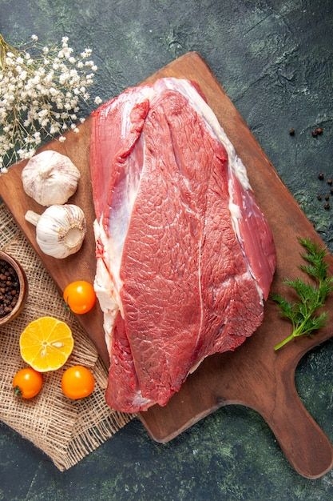
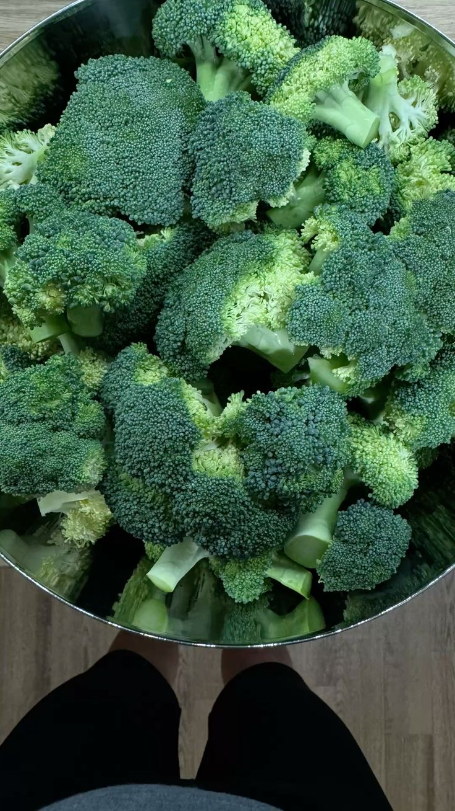
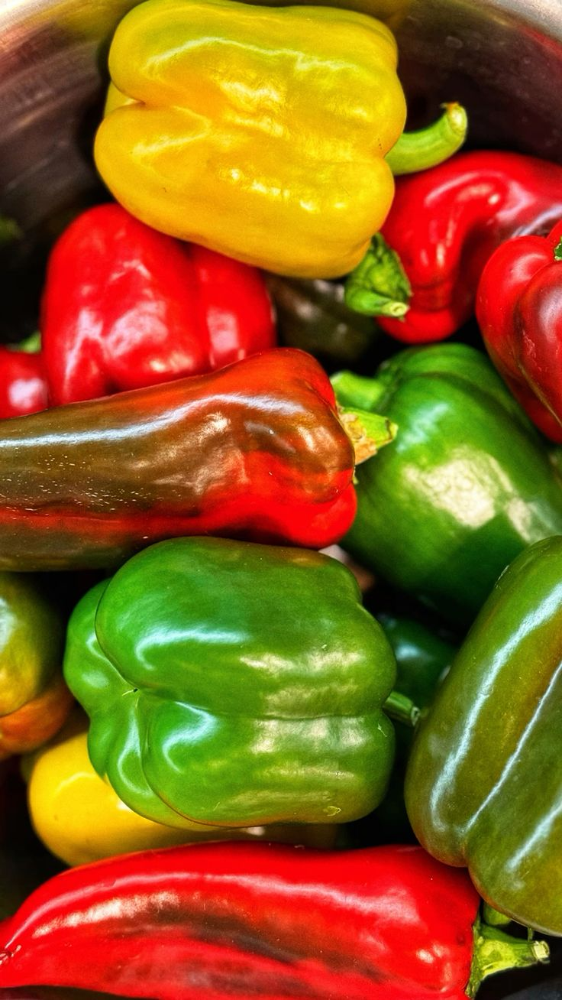
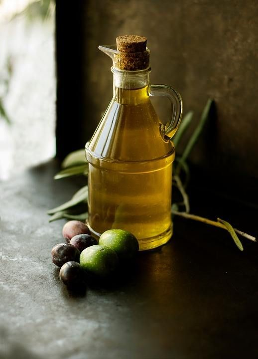

Содержание
Ингредиенты
| Продукт | Количество | КБЖУ | Фото |
|---|---|---|---|
| Говядина | 450 г | K:158 Б:22г Ж:7г У:0г |  |
| Брокколи | 350 г | K:31 Б:2,6г Ж:0,3г У:3,9г |  |
| Перец болгарский | 2 шт | K:27 Б:1,3г Ж:0,1г У:5,3г |  |
| Растительное масло | 1 ст. ложка | K:899 Б:0г Ж:99,9г У:0г |  |
Ингредиенты для соуса:
- Соевый соус - 80 мл
- Вода - 80 мл
- Чеснок - 2 зубчика
- Мука пшеничная - 1 ст.ложка
- Коричневый сахар - 25 г
- Соль, черный перец по вкусу
Приготовление
- Говядину и болгарский перец нарежьте небольшими продолговатыми кусочками. Брокколи разберите на соцветия.
- Смешайте соевый соус, воду, чеснок, пропущенный через пресс, муку и сахар для соуса.
- В воке или глубокой сковороде разогрейте масло на сильном огне. Примерно за 2 минуты подрумяньте говядину, часто помешивая.
- Всыпьте брокколи и болгарский перец и готовьте всё вместе еще 2 минуты.
- Влейте соус, перемешайте и через минуту снимите с огня.
- Перед подачей блюдо можно украсить кунжутными семечками.